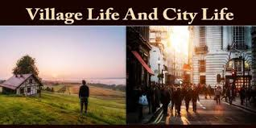

English part
Life in the city is full of activity. Early in the morning hundreds of people rush out of their homes in the manner ants do when their nest is broken. Soon the streets are full of traffic. Shops and offices open, students flock (1) to their schools and the day’s work begins. The city now throbs (2) with activity, and it is full of noise. Hundreds of sight-seers (3), tourists and others visit many places of interest in the city while businessmen from various parts of the world arrive to transact (4) business.

Then towards evening, the offices and day schools begin to close. Many of the shops too close. There is now a rush for buses and other means of transport (5). Everyone seems to be in a hurry to reach home. As a result of this rush, many accidents occur. One who has not been to the city before finds it hard to move about at this time. Soon, however, there is almost no activity in several parts of the city. These parts are usually the business centres.
With the coming of night, another kind of activity begins. The streets are now full of colourful lights. The air is cooler and life becomes more leisurely. People now seek entertainment. Many visit the cinemas, parks and clubs, while others remain indoors to watch television or listen to the radio. Some visit friends and relatives and some spend their time reading books and magazines. Those who are interested in politics discuss the latest political developments. At the same time, hundreds of crimes are committed (6). Thieves and robbers who wait for the coming of night become active, and misfortune (7) descends upon (8) many. For the greed (9) of a few, many are killed, and some live in constant fear. To bring criminals to justice (10), the officers of the law are always on the move (11).
Workers and others who seek advancement in their careers attend educational institutions which are open till late in the night. Hundreds of them sit for various examinations every year. The facilities (12) and opportunities that the people in the city have to further their studies and increase their knowledge of human affairs are indeed many. As a result, the people of the city are usually better informed than those of the village, where even a newspaper is sometimes difficult to get.
The city could, therefore, be described as a place of ceaseless activity. Here, the drama of life is enacted every day.
New word
- Flock (v) lũ lượt kéo đến, tụ tập, quây quần
- Throb (v) rộn ràng
- Sight-seer (n) người đi tham quan
- Transact (v) thực hiện, tiến hành, giải quyết
- Means of transport: phương tiện vận chuyển
- Commit (v) phạm phải
- Misfortune (n) sự rủi ro, sự bất hạnh, điều không may
- Descend upon (v) đến bất ngờ
- Greed (n) tính tham lam
- To bring someone to justice: đem ai ra tòa, truy tố ai tại tòa
- On the move: di chuyển
- Facility (n) điều kiện thuận lợi, phương tiện dễ dàng
- Leisurely: nhàn nhã, thư thả
Phần Dịch
Cuộc sống ở thành phố rất nhộn nhịp. Buổi sáng sớm, hàng trăm người ùa ra khỏi nhà như kiến vỡ tổ. Đường phố nhanh chóng đầy những phương tiện giao thông. Các cửa hàng và văn phòng mở cửa, học sinh tụ tập đến trường học và một ngày làm việc bắt đầu. Thành phố lúc này rộn ràng với các hoạt động và đầy tiếng ồn. Hàng trăm người đi tham quan, khách du lịch và những người khác ghé thăm các địa điểm nổi tiếng trong thành phố trong khi các người kinh doanh từ nhiều nơi trên thế giới thì đến để kinh doanh.
Đến chiều, các văn phòng và trường học bắt đầu đóng cửa. Nhiều cửa hàng cũng đóng cửa. Bây giờ mọi người đổ xổ đến các xe buýt và các phương tiện giao thông khác. Mọi người đều có vẻ vội vã để về nhà. Kết quả của sự vội vã này là nhiều tai nạn xảy ra. Một người chưa từng đến thành phố trước đó sẽ thấy khó khăn để di chuyển vào thời điểm này.Tuy nhiên không lâu sau một số khu vực không còn hoạt động. Thường là các trung tâm kinh doanh.
Buổi tối đến nhanh chóng, một số hoạt động khác là bắt đầu. Đường phố đầy ánh đèn màu. Không khí lạnh hơn và cuộc sống trở nên thư thả hơn.Mọi người tìm đến giải trí. Nhiều người đến rạp chiếu phim, người đến công viên và câu lạc bộ, trong khi một số khác thì ở nhà xem ti vi hay nghe radio.Một vài người đi thăm bạn bè và họ hàng, và dành thời gian cho đọc sách và báo chí. Những người quan tâm đến chính trị thì bàn luận về các chủ đề chính trị mới xảy ra. Cũng thời gian đó, hàng trăm tội ác được thực hiện, kẻ trộm và kẻ cướp chờ đến tối để hoạt động, và điều xui rủi xảy ra với nhiều người. Chỉ vì lòng tham mà nhiều người đã bị giết, và nhiều người khác phải sống trong sợ hãi. Để truy tố tội phạm ra tòa, các viên chức luôn sẵn sàng hành động.
Người lao động và những người khác tìm kiếm cơ hội phát triển nghề nghiệp của họ thì tham gia vào các lớp học buổi tối. Hàng trăm người trong số họ tham gia vào các kì thì khác nhau hàng năm. Các phương tiện và cơ hội để mọi người dân trong thành phố học tập và tăng cao kiến thứ là rất phong phú. Kết quả là người dân thành phố thường nắm bắt thông tin nhanh chóng hơn nông thôn, nơi mà thậm chí báo đôi khi cũng khó để có.
Thành phố là nơi của những hoạt động không ngừng nghỉ. Ở đây, vợ kịch cuộc sống tái diễn mỗi ngày.
Link bài luận tiếng anh